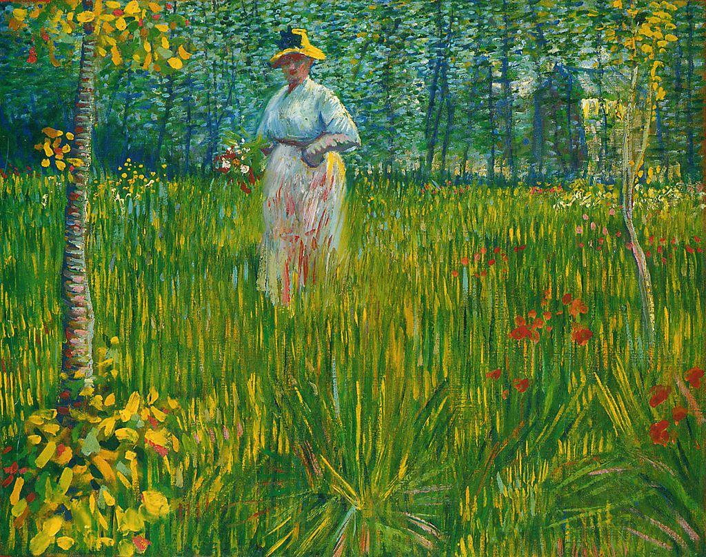

OBRA 01
Uma mulher Caminhando no jardim
Uma Mulher Caminhando no Jardim é uma obra que se destaca pelo uso de cores vivas e pinceladas rápidas. A tela mostra uma figura feminina cercada pela natureza exuberante. O cenário transmite uma sensação de tranquilidade e isolamento. O contraste entre as cores das flores e o verde das folhas cria uma atmosfera vibrante, típica do estilo pós-impressionista que buscava expressar emoções através da paisagem.
Pintor: Vincent van Gogh | Data de produção: 1887